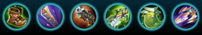

Recommended Build for Freya
- Warrior Boots - Increases Physical Defense and Movement Speed.
- Golden Staff - massively boosts Attack Speed and triggers basic attack effects.
- Malefic Roar - High Physical Penetration to shred through enemy armor.
- Blade of Despair - Provides the highest Physical Attack and bonus damage to low HP enemies.
- Oracle - Increases Shield absorption (vital for Freya) and HP Regen.
- Sea Halberd - Reduces enemy healing (Anti-Heal) and increases damage against tanky heroes.

Item Build Explanation
Freya excels as a fighter who benefits from attack speed, critical damage, and survivability. The recommended build focuses on maximizing her damage output while ensuring she can sustain in team fights.
Alternative Items
- Blade of Despair - For higher burst damage.
- Thunder Belt - For extra defense and slow effect.
- Antique Cuirass - For more durability against physical damage.